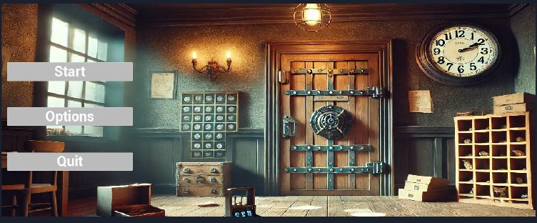

PROJECT 02
Magic School
시연 영상 Gameplay Video

YouTube에서 시연 영상 보기 ↗프로젝트 개요 Overview
Room Escape실세계와 판타지 요소가 결합된 방탈출
1인칭 시점1인칭 캐릭터로 현실적인 몰입감 제공
퍼즐단서를 이용해 다양한 문제 해결
김진호 ME · 팀장
- 콘텐츠 기획
- 기믹, 스토리, 단서 기획 및 제작
- 캐릭터 컴포넌트
- Grab / Release / Rotate 시스템, Interaction 시스템 구현
- 인벤토리 시스템
- 아이템 추가 / 빼기 / 이동 시스템
- UX / UI
- 나이아가라 기반 이펙트, 타이머 구현
이유정 팀원
- 콘텐츠 기획
- 기믹, 스토리, 단서 기획 및 제작
- 에셋 모델링 및 편집
- 에셋 분해, 병합, 피벗 수정
- 상호작용 기능
- 캐릭터의 Interaction 시스템 구현
- UX / UI
- 나이아가라 기반 이펙트, 게임 내 맵 구현
아웃게임 & 인게임 사이클
캐릭터 구조 Character
ACharacter→MagicSchoolCharacter◇CharacterMovementPhysicsHandleBPC_InteractionBPC_Inventory
이동은 CharacterMovement, 물체 잡기는 PhysicsHandle에 맡기고, 상호작용과 인벤토리는 직접 만든 액터 컴포넌트 BPC_Interaction, BPC_Inventory로 분리했습니다.
인터랙션 BPC_Interaction
Grabbing System 잡기 / 놓기
- 인터페이스로 오브젝트와의 상호작용을 구현했습니다.
ThrowObject(BP_Interface)를 가진 오브젝트만 상호작용할 수 있습니다. - 우클릭으로 잡으면 오브젝트가 플레이어 앞 5m에 위치합니다.
- 우클릭을 누르는 동안에만 유지되고, 떼면 오브젝트가 중력을 받아 떨어집니다.
Object Rotate 오브젝트 회전
- Grab 중에만 쓸 수 있는 추가 기능입니다.
- 특정 키를 누르면
Player.RotatingObject게임플레이 태그를 붙여 회전 상태임을 표시합니다. - 우클릭을 누른 채 특정 키를 누르고 마우스를 움직이면 오브젝트가 축을 따라 회전합니다.
인벤토리 BPC_Inventory
AddItem
- 현재 인벤토리의 빈 슬롯을 확인합니다.
- DB에 등록된 아이템인지 확인합니다.
- 슬롯에 아이템을 넣고, 같은 아이템이면 스택을 +1 합니다.
- 해당 칸이 차 있으면 다음 칸에 아이템을 넣습니다.
DropItem
- 인벤토리 슬롯의 아이템 데이터를 확인합니다.
- 캐릭터에 지정한 Drop Position에 아이템을 스폰하고 물리를 적용합니다.
- 슬롯 스택을 -1 하고, 0이 되면 빈 슬롯으로 바꿉니다.
MoveItem
- 옮길 슬롯과 대상 슬롯의 아이템 데이터를 확인합니다.
- 같은 아이템이면 대상 슬롯 스택을 늘리고 원래 자리를 비웁니다.
- 다른 아이템이면 대상 슬롯에 아이템과 수량을 옮기고 원래 자리를 비웁니다.
퍼즐 & 기믹 Puzzle
게임 기믹
- 액터별 상호작용이나 주변 사물로 다양한 힌트를 제공합니다.
- 모은 힌트로 퍼즐을 풀어 탈출하도록 설계했습니다.
자물쇠 기믹
- 실제 방탈출 같은 자물쇠를 위해 에셋을 구매했습니다.
- 플레이어와 상호작용하도록 로직을 수정해 적용했습니다.
- 자물쇠 조작키를 알려주는 UI를 만들었습니다.
UI / UX Effects · Level · Screens
나이아가라 VFX
- 기존 나이아가라 이펙트를 기반으로 수정·커스터마이징했습니다.
- 상호작용 시 이펙트로 신비로운 느낌을 줍니다.
- 나이아가라에 머티리얼을 입혀 판타지 요소를 강조했습니다.
인게임 레벨
- 마법학교 특유의 옛스러움과 은은한 주황빛 조명으로 신비로운 느낌을 냈습니다.
- 오브젝트와 조명을 배치했습니다.
- 플레이어가 물건을 다른 액터 위에 올렸을 때 자연스럽게 놓이도록 스태틱 메시 콜리전을 수정했습니다.
화면 구성
인트로, 메인, 인게임, 엔딩 등 각 화면을 위젯으로 만들었습니다. 엔딩 화면에는 남은 시간을 타이머로 보여줍니다.